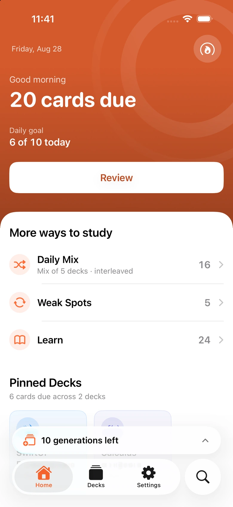

Choose your target
Select the exam you are preparing for, or start without one. Your exam profile shapes the terminology and depth of generated cards.
Built for the exam you are taking
Start with a topic, notes or a photo. Cognito creates cards you can check and edit before saving, then uses FSRS to plan each review. Choose an exam for more focused practice; Premium also supports PDFs, audio, videos and other sources.

One system, many goals
Cognito uses the exam you selected to shape what it generates and how deeply it expects you to answer. You can also study with no exam chosen and set one later in Settings.
Exam names and trademarks belong to their respective owners. Cognito is an independent study tool and is not endorsed by or affiliated with exam boards or testing organisations.
How it works
Select the exam you are preparing for, or start without one. Your exam profile shapes the terminology and depth of generated cards.
Create from a topic, pasted notes or a photo for free. Premium adds supported PDFs, audio, YouTube, web and arXiv sources. Check and edit cards before saving.
Review on a schedule shaped by your answer history. Set an exam date and study days to turn your library into an Exam Plan.
The study system
Creation, organisation, practice, tutoring and progress sit in one native app rather than four.
Cards written in your exam’s terminology and expected answer depth. Nothing enters your library until you have reviewed it.
Start free with topics, pasted text and photos. Premium also turns supported PDFs, audio, YouTube, webpages and arXiv papers into cards.
Classic, Compact, Quiz and Type Answer — the interaction changes, the card does not.
FSRS spaces reviews around your answer history. Daily Mix, Weak Spots, Learn and Exam Plans help you decide what to study next.
LaTeX, code, tables, Mermaid diagrams, cloze deletions, image occlusion, tags and text-to-speech — maths through medicine.
Widgets, offline review of saved cards, Dynamic Type, VoiceOver and optional iCloud sync across your devices.
Local-first
Study data is stored locally. Optional iCloud sync goes through your private CloudKit database. Online and AI features process only what is needed for the result you asked for.
Read the Privacy PolicyCards, decks, history and settings live on your device
Optional sync uses your own private iCloud database
No third-party advertising SDKs, no cross-app tracking
No sale of personal information
Start free
Free
Everything needed to run active recall on your own material, with AI generation on a monthly allowance.
Premium
Lifts the generation cap and unlocks the tools that turn more of your material into practice.
Weekly, monthly and yearly plans. Prices, billing periods, trial eligibility and any current offers are shown in the app in your local currency before you buy. Image occlusion, Anki import and accent themes are free and stay free.
FAQ
No. Pick “Learn without an exam” during onboarding and study any topic. You can choose or change an exam later in Settings, and existing cards keep working.
No AI system can guarantee that. Cognito uses your exam as context to shape practice, but you should check generated content against your current syllabus and authoritative sources.
Unlimited hand-made cards and review, FSRS scheduling, Classic and Compact study, Exam Plans, Anki import, optional iCloud sync, and 10 AI generation batches per calendar month from topics, pasted text or photos.
Yes — several medical formats are supported. It is a study tool, not clinical decision support, and it is not a place for patient-identifiable information.
Yes. Cognito is a native iPhone and iPad app and needs iOS or iPadOS 18 or later. Optional iCloud sync keeps one library across both.
Bring your own material. Cognito turns it into focused practice and keeps every review on schedule.
Get Cognito